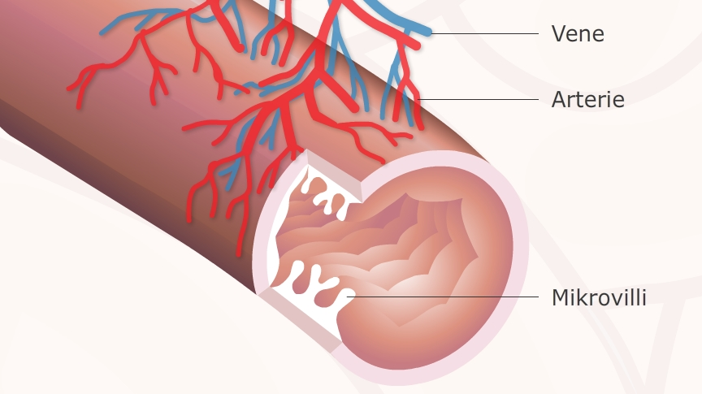
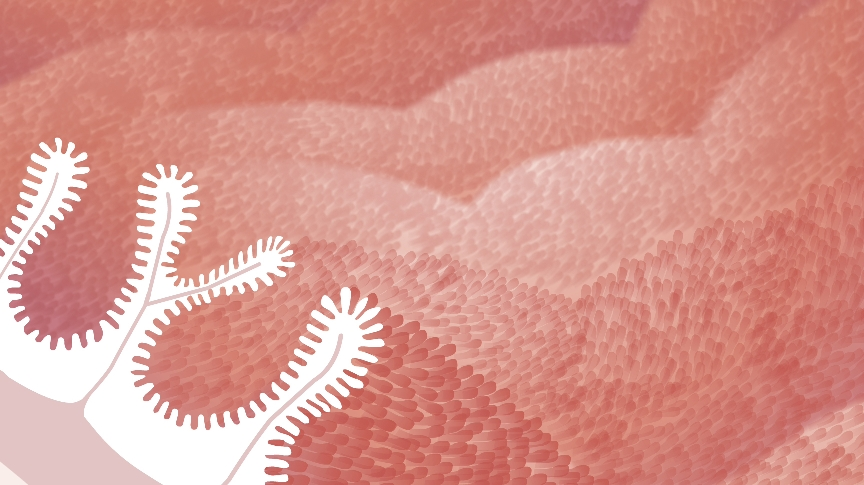
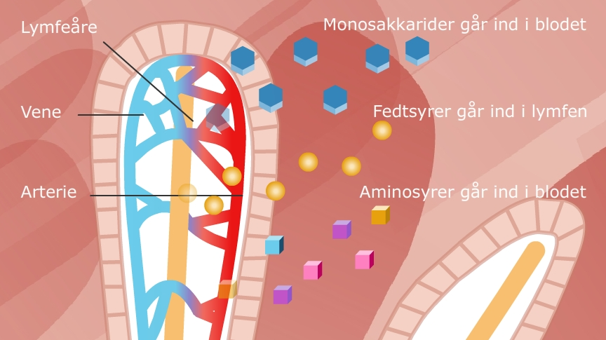

Nu går den ikke længere, nu skal vi have de nedbrudte næringsstoffer over i blodet, så vi kan bruge dem ude i kroppen. Til det har vi tyndtarmen.
Kroppens måde at få ilt til cellerne er via lungerne. Formålet med tyndtarmen er at få alle de næringsstoffer der nu er klippet i stykker til aminosyrer, monosakkerider og fedtsyrer over i blodet - se animation.
At få næringsstofferne over i blodet er rigtigt smart, da blodet kommer rundt i hele vores krop og næringsstofferne skal jo netop bruges overalt i kroppen. Blodet er altså et transportsystem rundt i kroppen, både til næringsstofferne, men også til oxygen (O2) og carbondioxid (CO2) - se billedet nedenfor.
Tyndtarmen er 3 – 4 meter lang.
Måden hvorpå næringsstofferne kommer over i blodet på, er gennem nogle folder i tarmvæggen, der kaldes tarmtrævler, se billedet nedenfor.
Når næringsstofferne er blevet transporteret fra tyndtarmen over i blodet, er der kun affaldsstoffer tilbage i tyndtarmen og de fortsætter herefter over i tyktarmen.
Næringsstofferne bliver nedbrudt færdigt i tyndtarmen og føres over i de blodårer der ligger rundt om tarmen.